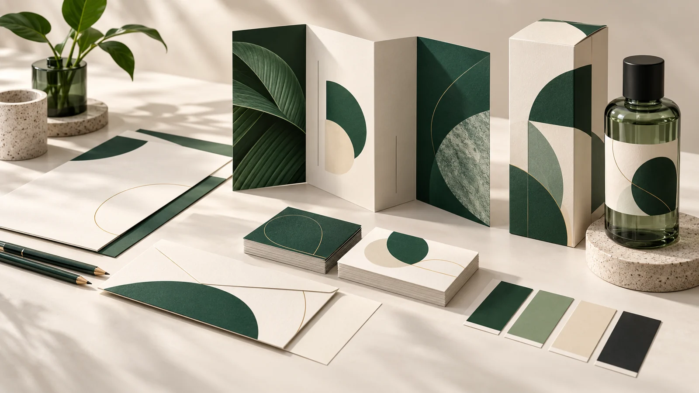
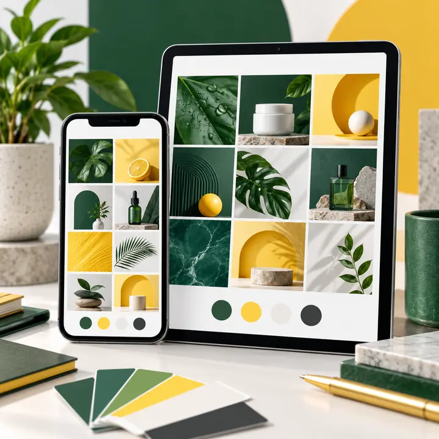
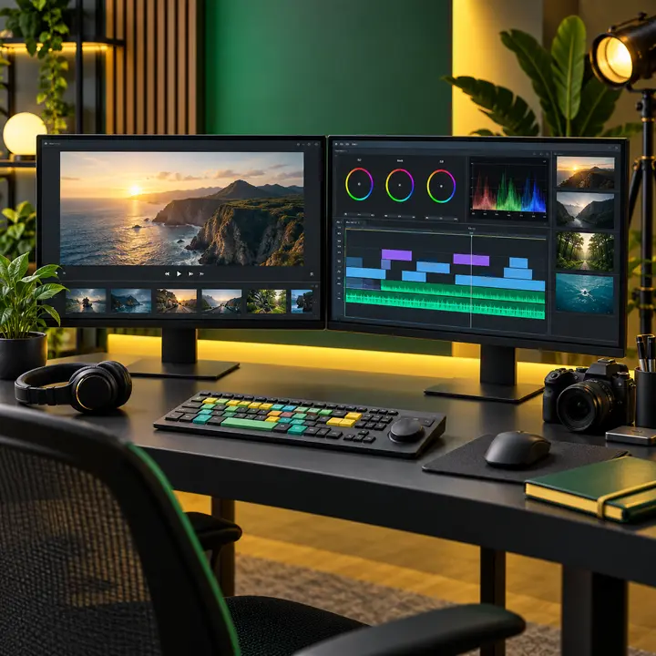

Blog / Tamil Nadu district guides / Chengalpattu
Chengalpattu · செங்கல்பட்டுGraphic Designer in Chengalpattu: A Business Guide

A graphic designer in Chengalpattu for your project is the one whose relevant work, communication and final-file delivery match your brief. Review portfolio examples, clarify the scope and compare quotations before deciding. Businesses in Chengalpattu can work with Sai Graphic Designs online. Our physical studio is in Madurai; we do not list a separate Chengalpattu branch.
This guide uses two illustrative project briefs to show what to look for. They are planning examples, not claims about completed clients or a ranking of district designers.
Project example: An apartment launch brochure
A property marketing brochure needs a clear separation between the approved project information, plans, amenities and enquiry details. Give the designer verified copy and ask how each page helps a reader compare the available options.
What to check in the proof
Have your team approve all specifications and required disclosures before layout approval. Check plan labels, orientation and the relationship between pictures and captions.
A different brief: A home-service company’s identity kit
Coordinate a logo, quotation header and service flyer. Define a small set of colors and type styles that your staff can reuse, then check whether the identity remains readable on an invoice as well as a vehicle graphic.
Build a useful brief for your Chengalpattu project
Start with the audience and the action you want the design to support. Then list each deliverable: size, number of pages or variants, language versions and intended use. Supply approved text and the clearest available logo or product images.
- Language: Tell us whether you need Tamil, English or separate versions. Have a fluent reviewer approve spelling, names and technical wording.
- Production: Send your printer’s template or dieline when relevant. Ask for a realistic size proof before approving artwork.
- Budget: Compare the same scope, revision rounds and file formats across quotes. Additional items and a new design direction should be agreed separately.
- Handover: Identify the editing software your team uses and the export formats your supplier needs. Editable-file delivery depends on the agreed package.
Questions from businesses planning work in Chengalpattu
Should architectural plans be redrawn inside the brochure?
Supply approved plans and agree on any visual adaptation in advance. Changes to measurements or technical content need approval from the responsible project team.
Can I work with Sai Graphic Designs from Chengalpattu?
Businesses in Chengalpattu can work with Sai Graphic Designs online. Our physical studio is in Madurai; we do not list a separate Chengalpattu branch. Send your brief, deadline and required formats through our contact page. We confirm the scope, revisions, schedule and payment steps before work begins.
Does the design quote include printing and delivery?
Design files and physical production are separate unless the quotation states otherwise. Confirm the product, quantity and delivery location before arranging printing or dispatch.
Choose the next step for your project
Review our design service galleries, business card design, brochure design and packaging artwork. Share which example fits your requirement and explain what should be different for your brand.
Request a quote for your Chengalpattu project →
Explore our design services
Planning your next project? Explore these services from Sai Graphic Designs and share your brief for a tailored quote.

Social Media Graphics
Create branded promotional posts and campaign graphics for your selected platforms.
View service & discuss your project →
Business Card Design
Prepare a professional card layout using your approved details and printer specifications.
View service & discuss your project →
Video Editing
Discuss promotional edits, reels and the output formats needed for your campaign.
View service & discuss your project →Visuals are design concepts. Scope, revisions, delivery dates and final files are confirmed in your quotation.